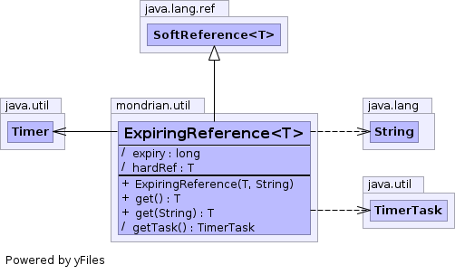

public class ExpiringReference<T> extends SoftReference<T>
SoftReference
which pins the reference in memory until a certain timeout
is reached. After that, the reference is free to be garbage
collected if needed.
The timeout value must be provided as a String representing both the time value and the time unit. For example, 1 second is represented as "1s". Valid time units are [d, h, m, s, ms], representing respectively days, hours, minutes, seconds and milliseconds.

| Modifier and Type | Field and Description |
|---|---|
(package private) long |
expiry |
(package private) T |
hardRef |
| Constructor and Description |
|---|
ExpiringReference(T ref,
String timeout)
Creates an expiring reference.
|
public ExpiringReference(T ref, String timeout)
ref - The referent.timeout - The timeout to enforce, in minutes.
If timeout is equal or less than 0, this means a hard reference.